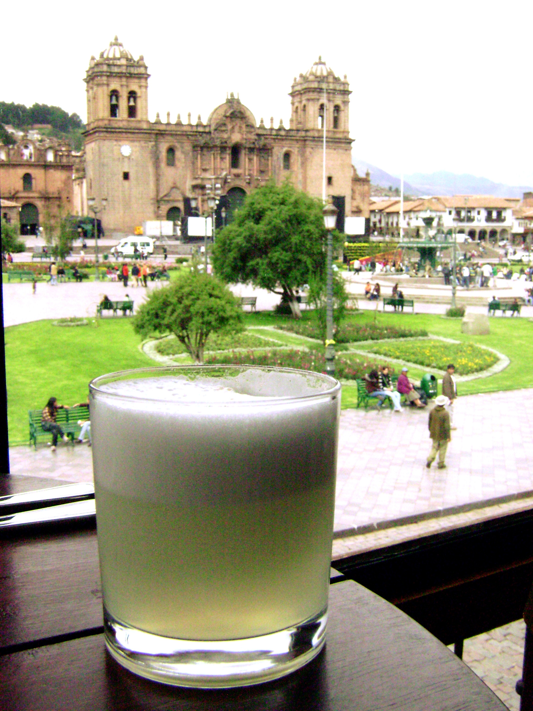

¡Correcto!
El pisco Quebranta es la mejor opción para preparar un buen Pisco sour

una pregunta más
¿Cuántas Onzas de pisco lleva una copa de Pisco Sour catedral?
Claro, lleva 1 Onza
Estoy seguro que lleva 4 Onzas
Como mínimo lleva 5 Oz